sankey-energy · son
GEÇTİ · kapı farkı %0.649 · kapı SSIM 0.99275 · ham fark %2.236 · ham SSIM 0.98913 · aynı Gauss çekirdeği σ=0.8 · yapısal 1/1
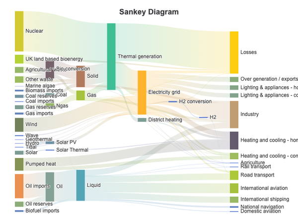
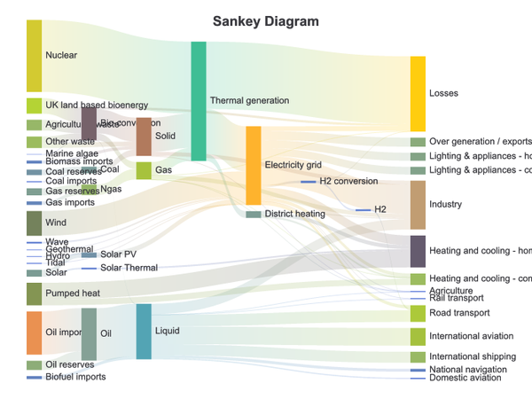
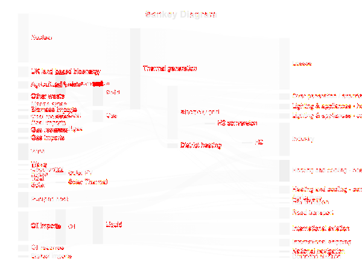
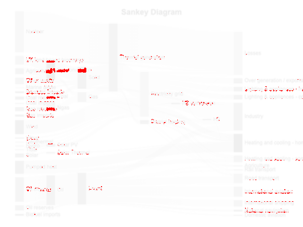
pixelmatch 0.1 · değişen piksel ≤ %1 · SSIM ≥ 0.99. Yoğun tipografi profili varsa değişmeyen eşikler iki görüntüye de aynı Gauss çekirdeği uygulandıktan sonra değerlendirilir; ham metrik ve ham fark daima gösterilir.
GEÇTİ · kapı farkı %0.649 · kapı SSIM 0.99275 · ham fark %2.236 · ham SSIM 0.98913 · aynı Gauss çekirdeği σ=0.8 · yapısal 1/1




GEÇTİ · kapı farkı %0.606 · kapı SSIM 0.99310 · ham fark %2.011 · ham SSIM 0.99012 · aynı Gauss çekirdeği σ=0.8 · yapısal 1/1
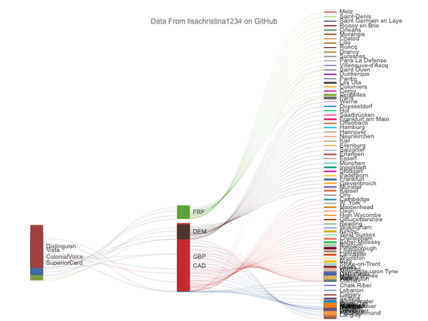
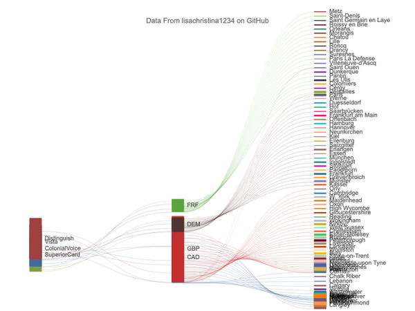
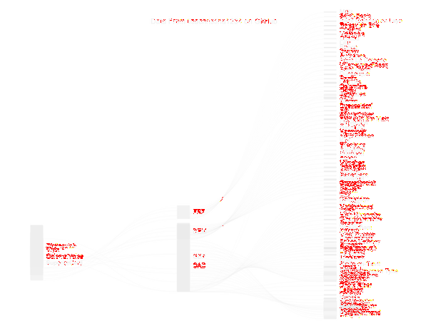
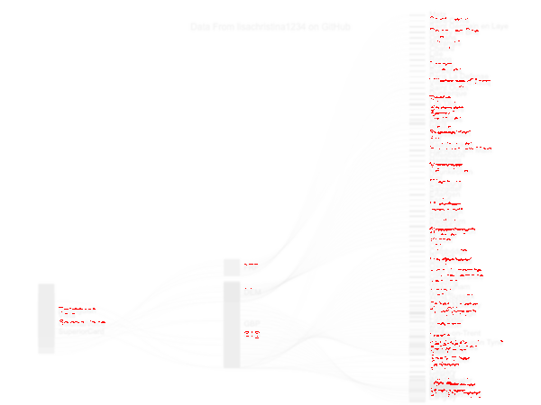
GEÇTİ · kapı farkı %0.493 · kapı SSIM 0.99199 · ham fark %1.621 · ham SSIM 0.98916 · aynı Gauss çekirdeği σ=0.8 · yapısal 1/1
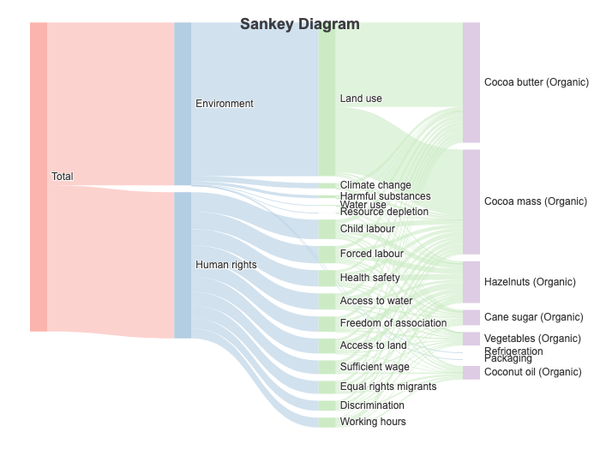
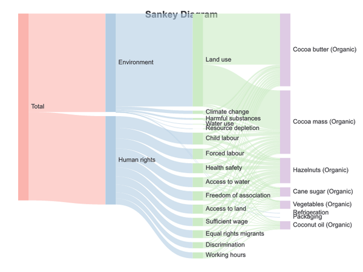
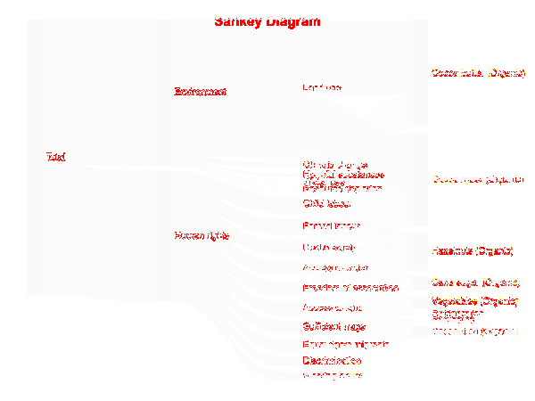
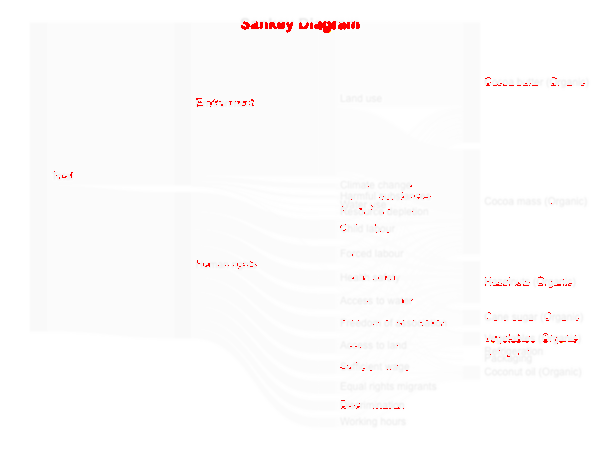
GEÇTİ · kapı farkı %0.702 · kapı SSIM 0.99325 · ham fark %2.371 · ham SSIM 0.98919 · aynı Gauss çekirdeği σ=0.8 · yapısal 1/1
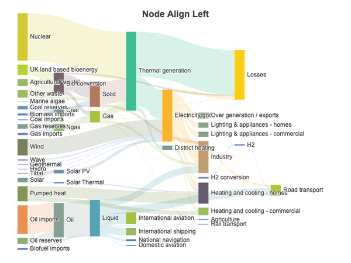
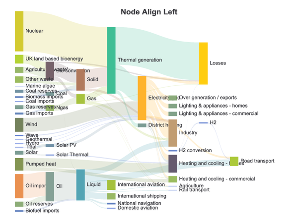
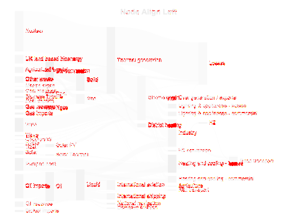
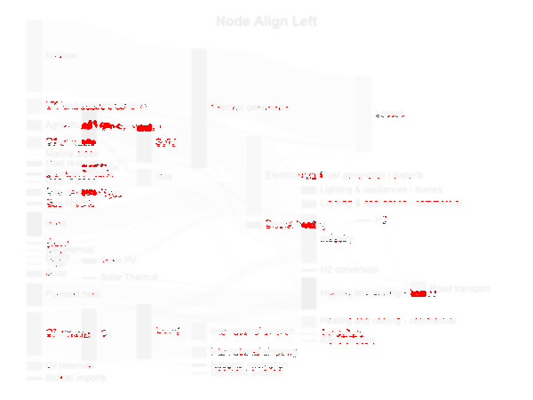
GEÇTİ · kapı farkı %0.844 · kapı SSIM 0.99242 · ham fark %2.369 · ham SSIM 0.98883 · aynı Gauss çekirdeği σ=0.8 · yapısal 1/1
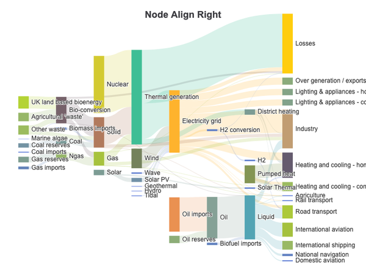
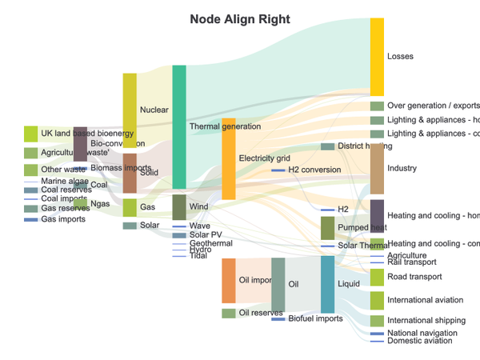
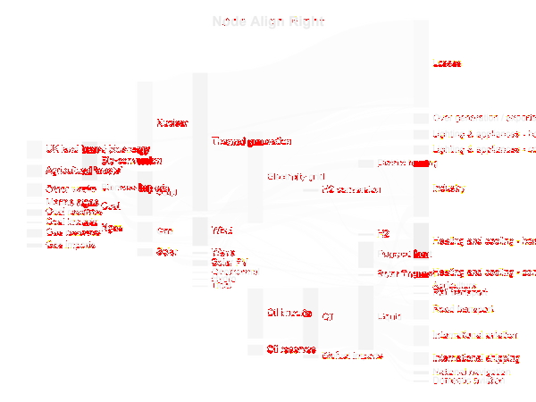
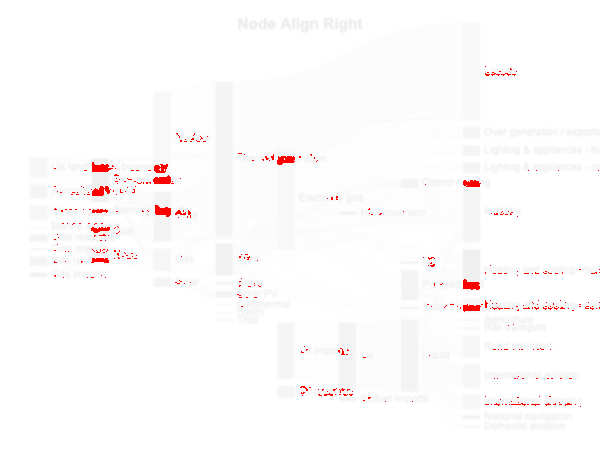
GEÇTİ · kapı farkı %0.005 · kapı SSIM 0.99975 · ham fark %0.023 · ham SSIM 0.99959 · aynı Gauss çekirdeği σ=0.8 · yapısal 1/1
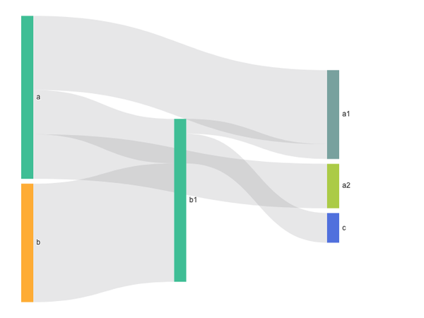
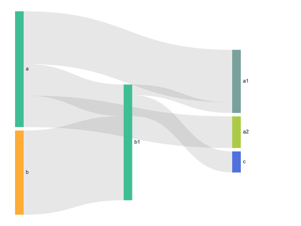
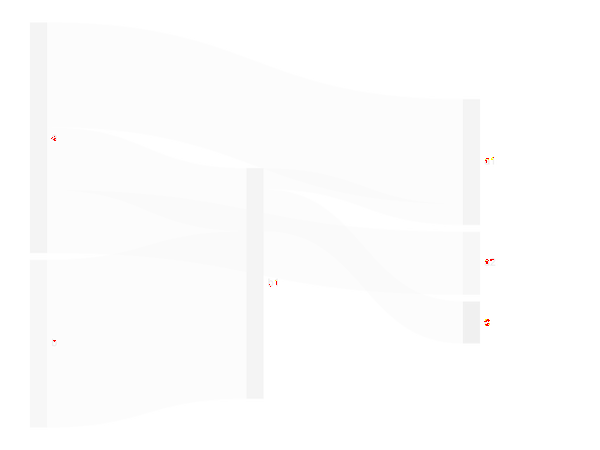
GEÇTİ · kapı farkı %0.016 · kapı SSIM 0.99938 · ham fark %0.054 · ham SSIM 0.99924 · aynı Gauss çekirdeği σ=0.8 · yapısal 1/1
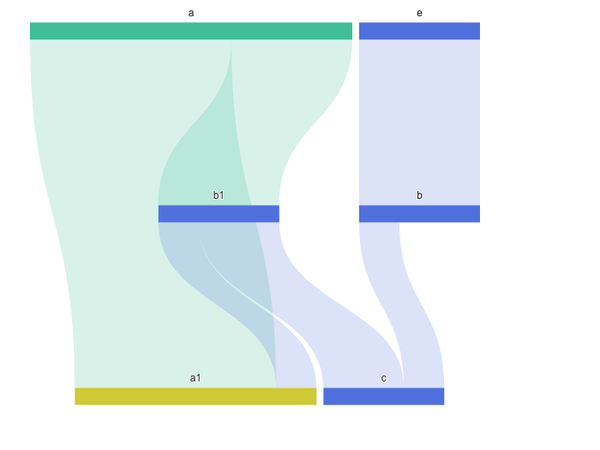
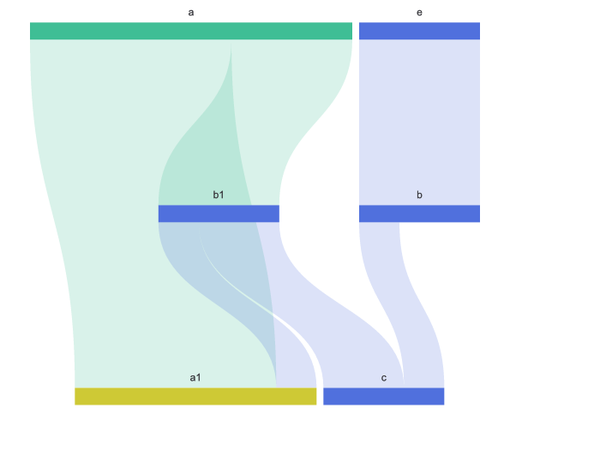
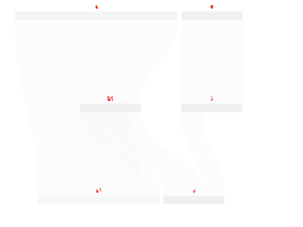
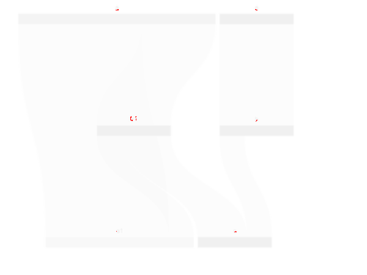